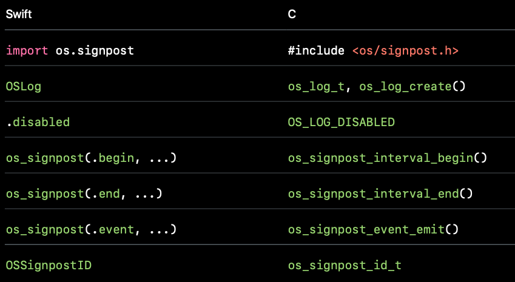

Sometimes, you may encounter heavy performance issue in RN page, like laggy and unresponsive pages. And you do want to take a deep look at how many data are passed through JSBridge and what’s going on there. You may found some people leverage spy function in MessageQueue.js to check the traffic volume through JSBridge. Blog here. It looks cool and helpful. However, in real life, you could see the your app performance is dragged down dramatically, even totally unresponsive when using this debug tool. So I was trying to find out a more efficient way to monitor traffic volume in JS bridge. Luckily, I saw a native performance monitoring logger inside react native framework, which appears in almost every crucial points in the workflow of JS-Native method calling. Then, I realized, maybe, I can use it to achieve the goal to spy bridge messages efficiently since it is in C++ realm and I can store all the data I collect in memory or use SignPost to make data visualized in Instrument.
NativeModulePerfLogger in React Native
In some crucial classes in react-native, you can see NativeModulePerfLogger is used to collect execution data. For example, in RCTNativeModule:invokeInner function, which is to dispatch function calling from JS to native, there are stubs using NativeModulePerfLogger in namespace BridgeNativeModulePerfLogger.
1 | if (context == Async) { |
If you look into BridgeNativeModulePerfLogger, it basically calls functions in NativeModulePerfLogger to collect data. Basically, NativeModulePerfLogger is a virtual class, a platform-agnostic interface to do performance logging for native modules and tubomodules. We can inherit NativeModulePerfLogger and implement all its pure virtual functions. These functions are for initializing Native Module object, JS require , sync method calls, async method calls,pre-processing async method call batch, async method call execution etc.
You may want to check out more details about these functions in the source file in Github. With the help of NativeModulePerfLogger, we can inject our own logger implementation, collecting performance data without modifying react-native SDK heavily.
SignPost
os_signpost is delivered by Apple for developers to collect performance data for visualization on iOS 10 and above. It allows you to place markers which can be displayed in instrument so that it is easier for developers to discern where the bottleneck is. The good is that Apple also provides C based APIs so I can basically use them in my c++ class which implements NativeModulePerfLogger.

I finally wrote react-native-bridge-instrument to combine the power of NativeModulePerfLogger and SignPost and help your monitor function callings happening in JS bridge much more efficiently.
For example, I place a markers when an async method calling starts; then place another related marker at the moment when this method calling ends. Instrument will help us wrap up all these data and visualize them for us well.
1 | void Cxx ::asyncMethodCallArgConversionStart( |
How to use it
Because I implemented CxxNativeModulePerfLogger in C. Basically, you have to write a method in mm file to use these C++ functions.
1 | #include <ReactNativeBridgeInstrument/CxxNativeModulePerfLogger.h> |
To test it, I integrate these CxxNativeModulePerfLogger to RNTester and run RNTester locally, then use Instrument to collect performance data.
Open the instrument, choose
Blanktemplate in Instrument
Then , add
os_signpostto current template, and start recording.

- pay attention to our customed logger Volume. There are 4 parts,
async_method_call: collect data for asynchronous methods running through JSBridgejs_require: used to calculate time interval to initialize modulesmodule: used to calculate time interval to createRCTModuleDatasync_method_call: collect data for synchronous methods running through JSBridge

For example, after scrolling a FlatList, I checked async_method_call volume. I saw createView , setChildren and managedChildren mthods in UIManager are called frequently. In 1.91 second, createView called for 2886 times, costing 1.16 seconds. Although the average duration is about 402.27us , which may looks like it is not a big deal; considering its frequency, this method finally tops first in our analysis panel. In this summary panel, you can see total, min, and avg time intervals for a specific method.

Also, you may would like to check the time interval to load module data.

若你觉得我的文章对你有帮助，欢迎点击上方按钮对我打赏
扫描二维码，分享此文章